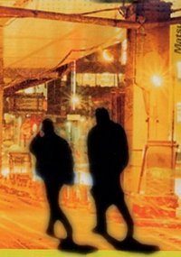

con
il patrocinio del Comune di Bisceglie
con
il patrocinio del Comune di Bisceglie
Recapiti
dell’AC diocesana:
- Centro diocesano ACI:
Via Beltrani, 9 –70059 Trani (BA), tel: 0883-494202
www.azionecattolicatrani.it
email: azionecattolica@arctrani.it
- Presidente: Luigi Lanotte, cell.: 328-2764803,
email: jobhel@inwind.it
- Segretario: Antonio Citro, cell.: 333-7420502,
email: antoniocitro@libero.it
- Coordinatore cittadino: Francesco Mastrogiacomo,
cell.: 329-4220451
